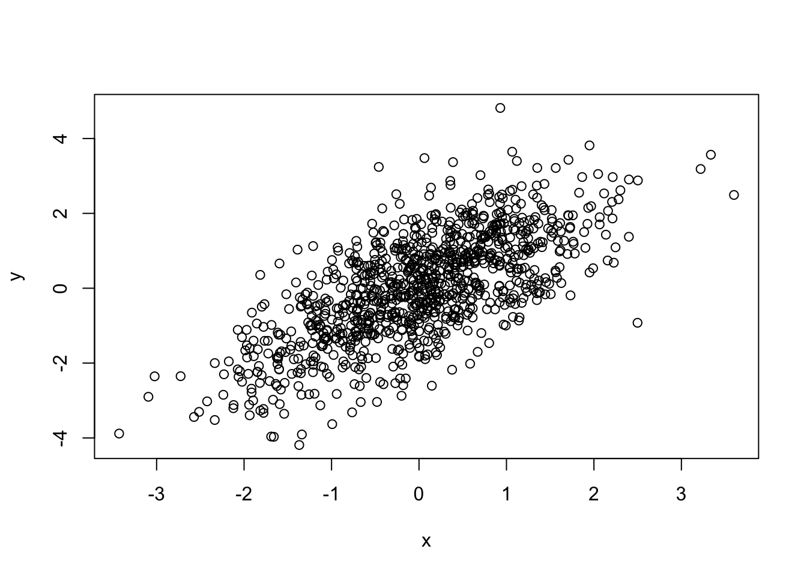
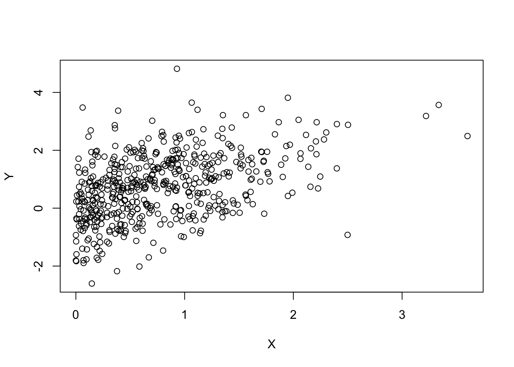
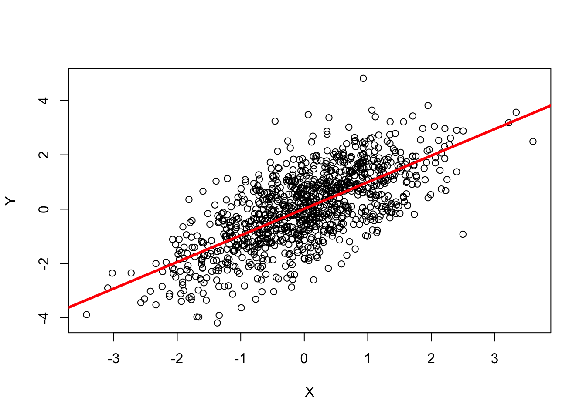

9 R: First Impressions
Type values and mathematical formulas into R’s command prompt
1 + 1## [1] 2Assign values to symbols (variables)
x = 1
x + x## [1] 2Invoke functions such as c(), which takes any number of values and returns a single vector
x = c(1, 2, 3)
x## [1] 1 2 3R functions, such as sqrt(), often operate efficiently on vectors
y = sqrt(x)
y## [1] 1.000000 1.414214 1.732051There are often several ways to accomplish a task in R
x = c(1, 2, 3)
x## [1] 1 2 3x <- c(4, 5, 6)
x## [1] 4 5 6x <- 7:9
x## [1] 7 8 910:12 -> x
x## [1] 10 11 12Sometimes R does ‘surprising’ things that can be fun to figure out
x <- c(1, 2, 3) -> y
x## [1] 1 2 3y## [1] 1 2 39.1 R Data types: vector and list
‘Atomic’ vectors
Types include integer, numeric (float-point; real), complex, logical, character, raw (bytes)
people <- c("Lori", "Nitesh", "Valerie", "Herve") people## [1] "Lori" "Nitesh" "Valerie" "Herve"Atomic vectors can be named
population <- c(Buffalo=259000, Rochester=210000, `New York`=8400000) population## Buffalo Rochester New York ## 259000 210000 8400000log10(population)## Buffalo Rochester New York ## 5.413300 5.322219 6.924279Statistical concepts like
NA(“not available”)truthiness <- c(TRUE, FALSE, NA) truthiness## [1] TRUE FALSE NALogical concepts like ‘and’ (
&), ‘or’ (|), and ‘not’ (!)!truthiness## [1] FALSE TRUE NAtruthiness | !truthiness## [1] TRUE TRUE NAtruthiness & !truthiness## [1] FALSE FALSE NANumerical concepts like infinity (
Inf) or not-a-number (NaN, e.g., 0 / 0)undefined_numeric_values <- c(NA, 0/0, NaN, Inf, -Inf) undefined_numeric_values## [1] NA NaN NaN Inf -Infsqrt(undefined_numeric_values)## Warning in sqrt(undefined_numeric_values): NaNs produced## [1] NA NaN NaN Inf NaNCommon string manipulations
toupper(people)## [1] "LORI" "NITESH" "VALERIE" "HERVE"substr(people, 1, 3)## [1] "Lor" "Nit" "Val" "Her"R is a green consumer – recycling short vectors to align with long vectors
x <- 1:3 x * 2 # '2' (vector of length 1) recycled to c(2, 2, 2)## [1] 2 4 6truthiness | NA## [1] TRUE NA NAtruthiness & NA## [1] NA FALSE NAIt’s very common to nest operations, which can be simultaneously compact, confusing, and expressive (
[: subset;<: less than)substr(tolower(people), 1, 3)## [1] "lor" "nit" "val" "her"population[population < 1000000]## Buffalo Rochester ## 259000 210000
Lists
The list type can contain other vectors, including other lists
frenemies = list( friends=c("Larry", "Richard", "Vivian"), enemies=c("Dick", "Mike") ) frenemies## $friends ## [1] "Larry" "Richard" "Vivian" ## ## $enemies ## [1] "Dick" "Mike"[subsets one list to create another list,[[extracts a list elementfrenemies[1]## $friends ## [1] "Larry" "Richard" "Vivian"frenemies[c("enemies", "friends")]## $enemies ## [1] "Dick" "Mike" ## ## $friends ## [1] "Larry" "Richard" "Vivian"frenemies[["enemies"]]## [1] "Dick" "Mike"
Factors
Character-like vectors, but with values restricted to specific levels
sex = factor(c("Male", "Male", "Female"), levels=c("Female", "Male", "Hermaphrodite")) sex## [1] Male Male Female ## Levels: Female Male Hermaphroditesex == "Female"## [1] FALSE FALSE TRUEtable(sex)## sex ## Female Male Hermaphrodite ## 1 2 0sex[sex == "Female"]## [1] Female ## Levels: Female Male Hermaphrodite
9.2 Classes: data.frame and beyond
Variables are often related to one another in a highly structured way, e.g., two ‘columns’ of data in a spreadsheet
x = rnorm(1000) # 1000 random normal deviates
y = x + rnorm(1000) # another 1000 deviates, as a function of x
plot(y ~ x) # relationship between x and y
Convenient to manipulate them together
data.frame(): like columns in a spreadsheetdf = data.frame(X=x, Y=y) head(df) # first 6 rows## X Y ## 1 -0.04732344 0.7840313 ## 2 -1.59249549 -3.0961430 ## 3 -0.72153705 0.2662046 ## 4 1.14214343 -0.8641628 ## 5 -0.78047438 -1.5064495 ## 6 1.37266293 0.2043120plot(Y ~ X, df) # same as aboveSee all data with
View(df). Summarize data withsummary(df)summary(df)## X Y ## Min. :-3.42857 Min. :-4.18902 ## 1st Qu.:-0.65599 1st Qu.:-0.89595 ## Median : 0.03235 Median : 0.06488 ## Mean : 0.01031 Mean : 0.02457 ## 3rd Qu.: 0.68548 3rd Qu.: 1.00547 ## Max. : 3.60129 Max. : 4.81667Easy to manipulate data in a coordinated way, e.g., access column
Xwith$and subset for just those values greater than 0positiveX = df[df$X > 0,] head(positiveX)## X Y ## 4 1.1421434 -0.86416277 ## 6 1.3726629 0.20431204 ## 7 0.3630616 -0.88145320 ## 12 0.9126994 0.85139178 ## 15 2.2144485 2.96934998 ## 17 1.3105291 -0.03774609plot(Y ~ X, positiveX)
R is introspective – ask it about itself
class(df)## [1] "data.frame"dim(df)## [1] 1000 2colnames(df)## [1] "X" "Y"matrix()a related class, where all elements have the same type (adata.frame()requires elements within a column to be the same type, but elements between columns can be different types).
A scatterplot makes one want to fit a linear model (do a regression analysis)
- Use a formula to describe the relationship between variables
Variables found in the second argument
fit <- lm(Y ~ X, df)Visualize the points, and add the regression line
plot(Y ~ X, df) abline(fit, col="red", lwd=3)
Summarize the fit as an ANOVA table
anova(fit)## Analysis of Variance Table ## ## Response: Y ## Df Sum Sq Mean Sq F value Pr(>F) ## X 1 957.97 957.97 916.93 < 2.2e-16 *** ## Residuals 998 1042.67 1.04 ## --- ## Signif. codes: 0 '***' 0.001 '**' 0.01 '*' 0.05 '.' 0.1 ' ' 1N.B. – ‘Type I’ sums-of-squares, so order of independent variables matters; use
drop1()for ‘Type III’. See DataCamp Quick-RIntrospection – what class is
fit? What methods can I apply to an object of that class?class(fit)## [1] "lm"methods(class=class(fit))## [1] add1 alias anova case.names ## [5] confint cooks.distance deviance dfbeta ## [9] dfbetas drop1 dummy.coef effects ## [13] extractAIC family formula hatvalues ## [17] influence kappa labels logLik ## [21] model.frame model.matrix nobs plot ## [25] predict print proj qr ## [29] residuals rstandard rstudent simulate ## [33] summary variable.names vcov ## see '?methods' for accessing help and source code
9.3 Help!
Help available in Rstudio or interactively
Check out the help page for
rnorm()?rnorm‘Usage’ section describes how the function can be used
rnorm(n, mean = 0, sd = 1)Arguments, some with default values. Arguments matched first by name, then position
‘Arguments’ section describes what the arguments are supposed to be
‘Value’ section describes return value
‘Examples’ section illustrates use
Often include citations to relevant technical documentation, reference to related functions, obscure details
Can be intimidating, but in the end actually very useful